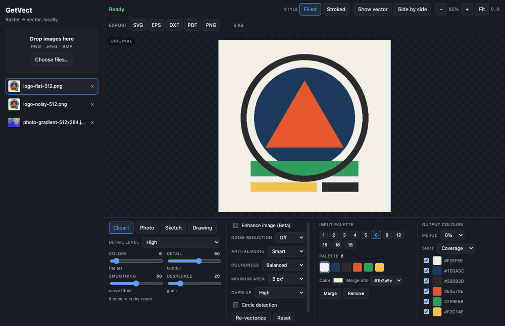
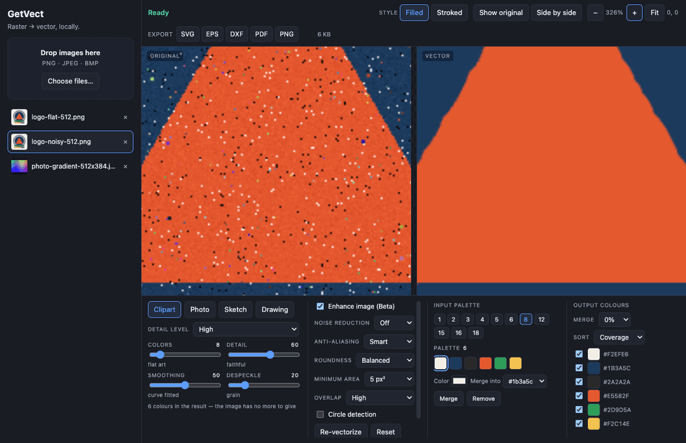

REFERENCE.md
The quality bar the whole project is graded against: the acceptance checklist with ids, the gold-standard artwork and its measured properties, and the numeric quality bar. If you want to know what "done" means here, it is this file.
Documentation
Install it from the latest release (a signed, notarized dmg for macOS; an unsigned exe for Windows — see the download page for the first-launch step), or run it from source. Everything below is what the app does today.
Getting started
Not building from source? Take the dmg from the latest release — macOS on Apple Silicon, signed and notarized, with platform notes on the download section of the front page.
To build it yourself you need Node 20+ and, for now,
macOS. Linux needs xvfb-run -a for the Electron tests;
Windows is untested.
git clone https://github.com/craigjmidwinter/getvect.git
cd getvect
npm install # postinstall de-quarantines + ad-hoc-signs the Electron binary
npm start # build + launch
npm run dist # package -> release/mac-arm64/GetVect.app (+ dmg, zip)npm start always builds the real bundle and launches it. npm run dev
runs the Vite dev server with renderer hot reload — good for iteration, and never what the
test suite exercises.
npm run dist builds unsigned on purpose: that is right for
running your own build and wrong for distribution. The packaging config is
electron-builder.yml; the signing and notarization notes are in
PUBLISH-CHECKLIST.md.
On recent macOS, Gatekeeper/XProtect deletes the freshly-extracted, unsigned
node_modules/electron/dist/Electron.app the first time you exec it. The
symptom is spawn .../Electron ENOENT on a file that was there a second ago.
The postinstall hook (scripts/verify-electron.mjs) detects
this, strips the quarantine attributes and applies an ad-hoc signature. If you ever see
that ENOENT, run npm run postinstall.
Control surface
Presets and candidate palettes rather than a wall of generic sliders, so the control you reach for matches the kind of image you are converting.
| Preset | What it is for | Extra control |
|---|---|---|
| Clipart | Flat-colour artwork — stickers, decals, logos, t-shirt and tattoo art. The default, and the case the whole engine is tuned for. | Detail Level: maximum, ultra, very-high, high, medium, low, minimum |
| Photo | Continuous-tone images. Deliberately not the target use case — it works, but the quality bars are looser for a reason. | Uses a colour floor of 16, so a lower colour count will not be honoured |
| Sketch | Grayscale line work. | — |
| Drawing | Pure black and white, split on luminance. | Threshold 0–255. Colour controls are disabled here, because the preset cannot use them. |

| Control | Values | What it does |
|---|---|---|
| Enhance (Beta) | off / on | A local denoise and colour-simplification bundle inside the engine. Raises the area floors so quantization debris loses its scraps on the picture rather than its seat in the palette. Entirely offline — not to be confused with AI Enhance below. |
| Noise Reduction | off / low / high | Pre-trace smoothing for speckled sources. |
| Anti-aliasing | off / smart / mid | Smart is the default, and it is the single highest -value setting here: a pre-trace edge cleanup worth 1747 sub-paths → 551 and 396 KB → 140 KB on the reference artwork. It is the difference between output that looks traced and output that looks drawn. |
| Control | Values | What it does |
|---|---|---|
| Roundness | 3 levels | Curve-fitting aggressiveness — how hard the tracer pushes polylines into cubics. |
| Minimum Area | 0 / 5 / 90 px² | Speck removal. Shapes smaller than the threshold are dropped; 0 keeps every speck. |
| Overlap | full / high | Whether lower colour layers are painted under the upper ones or trimmed to their visible area. |
| Circle Detection | off / on | Recognises near-circular contours and emits them as clean circles. |
| Result style | filled / stroked | Filled colour layers, or stroked outlines of the same geometry. |

Export
Every export goes through the real macOS save dialog with a sensible default filename derived from the image. Nothing is written anywhere else.
| Format | What you get |
|---|---|
| SVG | One <g fill="rgb(r,g,b)"> group per colour, so the file drops
into Illustrator or Inkscape as editable colour groups. viewBox="0 0 w h"
in source pixels. A disabled background colour simply is not in the file — there is
no full-bleed rectangle faking transparency. |
| DXF — splines | The default. R2000, with every fitted cubic travelling as a degree-3
SPLINE, so a CAD or cutter file is a drawing rather than a point
cloud. |
| DXF — lines | The Splines / Lines picker beside the DXF button flattens
everything to R12 POLYLINE/VERTEX for older CAD and
cutter firmware that cannot read a spline at all. Same drawing, same extents,
no curves. |
| EPS | PostScript paths with a correct bounding box; curves survive as curve operators. |
| A single page with a MediaBox at the source dimensions. | |
| PNG | A raster re-render of the traced result — useful for a quick check that the cleanup did what you wanted. |
A DXF that flattens every fitted cubic into vertex runs is roughly 12× the EPS of the same drawing; the spline variant lands at about 2.2×. If your machine can read splines, keep the default.
AI Enhance
GetVect has two network touchpoints, both in your control: AI Enhance, and a
once-per-launch update check against GitHub Releases (disable with
GETVECT_NO_UPDATE_CHECK=1). AI Enhance is the only one that sends anything —
your image, to Google, under your own key. Everything else runs under a
default-src 'self' content security policy with no runtime network calls at
all.
With AI Enhance on, the image you are working on is uploaded to Google under your own API key and their terms — which is exactly the thing the rest of this app exists to avoid. Nothing else changes: no other image, no other feature, no telemetry, and the switch is off until you turn it on.
| Tier | Model | Trade |
|---|---|---|
| Fast (default) | gemini-2.5-flash-image |
About 8 s, cheaper, leaves some soft texture behind. |
| Best | gemini-3-pro-image-preview |
About 20 s, pricier, genuinely flat fills. An A/B on the reference artwork showed the model tier — not the prompt — is what decides flatness. |
safeStorage (Keychain on macOS) inside
the app's data directory.A bad key, no network, or the 60-second timeout each fall back to tracing the un-enhanced image, and the app names the reason — an authentication failure, a rate limit, a timeout. There is no state where the app hangs waiting for a model.
One thing worth knowing: Gemini returns RGB even when asked for transparency, so an enhanced image can come back flattened. GetVect never fabricates an alpha channel to cover that up.
Set GETVECT_AI_DEBUG_DIR before launching and every successful
enhance writes its exact input, its output and a small metadata file (provider, model,
tier, duration, byte counts) into that directory, so a disappointing result can be
inspected after the fact.
GETVECT_AI_DEBUG_DIR=/tmp/getvect-ai npm startIt is off unless the variable is set, because those are your images being written to disk.
Updates
Once per launch, GetVect asks GitHub Releases whether there is a newer version. If there is, a small dismissible banner appears in the corner with a Download link; dismiss it and that version never asks again. Nothing is downloaded in the background and nothing is installed behind your back.
The other half is written and dormant. Now that macOS builds are signed, an in-app updater can work — Squirrel, the machinery Electron apps update through, checks the replacement's signature against the running app's, and that check can now pass. It stays off until it has been exercised end to end against a signed release, because an updater that pulls 117 MB and fails at the last step is worse than no updater at all.
The check sends no identifier, asks one question, and fails silently when you are offline. To turn it off:
GETVECT_NO_UPDATE_CHECK=1 open -a GetVect
# or, permanently:
launchctl setenv GETVECT_NO_UPDATE_CHECK 1Along with AI Enhance, that is the complete list of things this app does on a network: two touchpoints, both in your control.
Testing & instruments
npm test # engine contract tests, then the Playwright acceptance suite
npm run test:engine # just the engine contracts (pure Node, no Electron)
npm run instruments # fidelity metrics -> artifacts/metrics.json
npm run screenshots # a labelled contact sheet of the whole flow[A1]…[D5]). Selectors are data-testid only.node --test over the pure tracing
engine: determinism, setting semantics, SVG/EPS/DXF/PDF structure, alpha handling, and
rasterized checks that the picture actually changed.Do not read artifacts/metrics.json whole — the stdout table is the interface,
and the file is meant to be queried with jq.
Troubleshooting
spawn …/Electron ENOENT on a file that was just thereXProtect deleted the unsigned Electron binary out of node_modules. This is
the single most common first-run failure. Re-run the repair hook:
npm run postinstallIt re-fetches if needed, strips com.apple.quarantine and applies an ad-hoc
signature. An environment fix that lives in one shell session is not a fix, which is why
this is a hook rather than a note.
macOS: yes, since v0.1.3. The dmg is signed with an Apple Developer ID
and notarized by Apple, with the ticket stapled, so it opens with no Gatekeeper warning
and the check works offline. Verify it yourself with
spctl -a -t install -vv GetVect-0.1.3-arm64.dmg — it answers
accepted / source=Notarized Developer ID — and
codesign -dvvv shows Team ID 6UV93L24YL.
Windows: not yet. There is no Authenticode certificate, so SmartScreen warns on first launch. It is one-time and the steps below clear it.
What it sends: a once-per-launch check for a newer version (opt out with
GETVECT_NO_UPDATE_CHECK=1), and, only if you turn it on,
AI Enhance under your own API key. Nothing else leaves your
machine.
The published dmg should not produce this any more — since v0.1.3 it is signed and
notarized, and spctl -a -t install -vv on it answers accepted.
If you see it, check which build you have first:
spctl -a -vv /Applications/GetVect.appA v0.1.2 or earlier download is genuinely unsigned; the fix is to get the
current release rather than to work around it. A build from npm run dist is
unsigned on purpose and will always do this — that one is yours, so removing the quarantine
attribute is reasonable:
xattr -dr com.apple.quarantine /Applications/GetVect.appOnly ever do that for a bundle you built yourself. For a downloaded one, the point of a signature is that you should not have to.
It has a colour floor of 16. Ask for 4 and you will get 10–16; the panel will not display a number the engine is not going to use.
Check the colour-count hint. Either the image genuinely does not contain that many distinct colours, or the merge threshold folded near-duplicates. Drag Merge threshold to 0 to turn the fold off — it is the only thing that merges colour groups, and nothing raises it behind your back.
Electron needs a display. Run the suite under xvfb-run -a. On Windows the
engine contracts run in CI before every release; the full Electron acceptance suite is
driven on macOS only.
macOS: drag GetVect.app out of Applications, then remove
the state the app created (settings, and the encrypted AI key if you saved one):
rm -rf ~/Library/Application\ Support/GetVect
rm -rf ~/Library/Caches/getvect-updaterWindows: Settings → Apps → GetVect → Uninstall. The uninstaller removes the app, the Start Menu entry and its registry key, but leaves two things behind — measured, not guessed:
Remove-Item -Recurse "$env:APPDATA\GetVect"
Remove-Item -Recurse "$env:LOCALAPPDATA\getvect-updater"The second one is a ~100 MB cached copy of the installer that the install itself creates and the uninstaller does not clean up. Until that is fixed, these two lines are the difference between "uninstalled" and "gone".
Going deeper
The quality bar the whole project is graded against: the acceptance checklist with ids, the gold-standard artwork and its measured properties, and the numeric quality bar. If you want to know what "done" means here, it is this file.
Every instrument, what each metric means and why it exists, the fixture manifest schema, the one-decode contract, and the engine interface contract builders have to implement.
The whole build chronicled as it happened — the loop design, the ground-truth recon against a shipping product, the laps, and the day AI Enhance turned out to be an illustrator rather than a filter.
Short version: the suite must be green where it was green, the instruments must not
regress, and any new UI has to declare its testids in docs/TESTIDS.md.